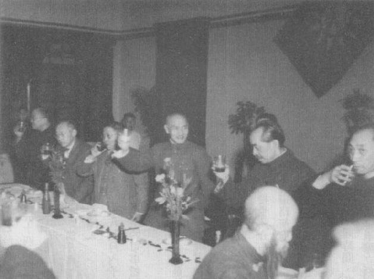
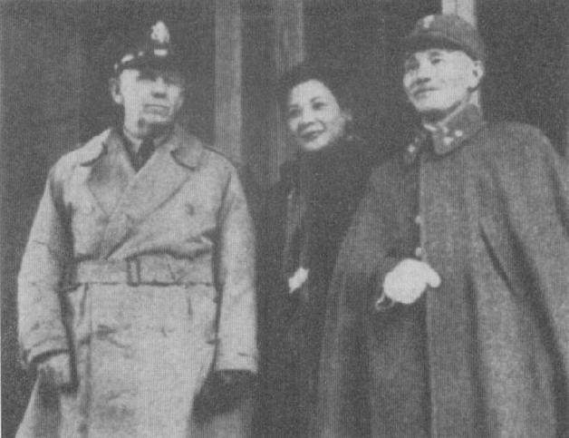
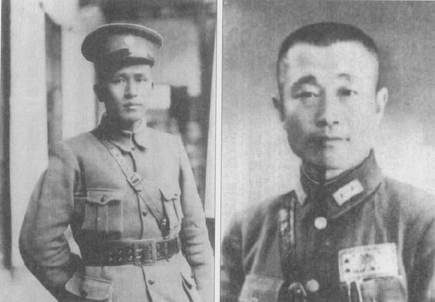
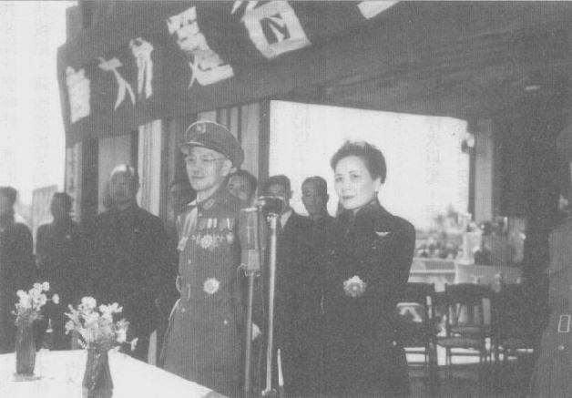
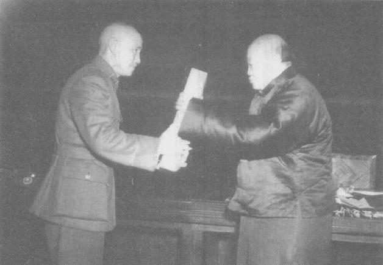
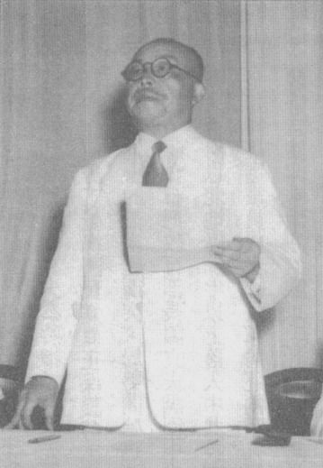

|
前一页 后一页 回目录 回主页 |
第八章：妄想胜利 马歇尔调处任务的立即目标是安排国共停火。他再次提议，有一个方法可以“承认”中共目前占领土地、控制地方政府的部队，那就是“让他们和政府军混合”，换言之，即纳编入政府部队①。蒋一直都想要这样的安排，大感振奋，认为他“必可信赖”马歇尔主持“三人小组”来交涉停火协议。马歇尔提议的这个三人小组，将包括国共各一位高阶干部，分别为张群（后改派张治中）和周恩来，以及马歇尔本人②。另一个问题也解决了，马歇尔意外地说服周恩来接受美国继续运送中央军到东北，并且规定在停火期间，中央军“为恢复中国主权而开入东北或在东北境内调动，并不影响”③。元月初只经过少数几次会议，三人小组就令人惊诧地达成有关军队整合、联合政府以及停火的协议，而且条件全有利于政府。多年之后，蒋慨叹，马歇尔此时的立场和态度使他决定要为东北而战④。 ① Chiang Diaries, Hoover, December 30, 1945, box 44, folder 13. ② 同上注。 ③ White Paper, p.137; Larry I.Bland, ed., George C.Marshall Interviews and Reminiscences for Forrest C.Pogue, 3d ed. (Lexington, Va.: George C.Marshall Foundation, 1996), p.409. ④ Chiang Diaries, Hoover, August 7, 1951, box 49, folder 3. 毛泽东虽然似乎乐于同意任何书面的东西，对他而言最重要的还是现场的实际状况。他又调15万部队归东北的林彪指挥，并且命令他把另20万地方部队纳入其主力部队①。1946年1月13日，蒋、毛分别下令给国、共部队，自午夜起双方停止敌对行为和一切部队调动，除了已取得协议的若干例外——最重要的是，政府军可以进入东北。尽管停火条件在东北明显有利于政府，蒋和他的将领却认为整体而言，停火对政府“不利”。阎锡山就警告说，停火只会使中共有时间重新编组和扩张。但是蒋觉得他别无选择——为保护他和美国的关系，并鼓励苏联在东北与重庆当局合作，他需要坚守此一协议。三人小组的执行本部（包括美国人士）迁往北平监督停火状况②。 ① Michael M.Sheng（盛慕真），Battling Western Imperialism: Mao, Stalin, and the United States (Princeton, N.J.: Princeton University Press, 1997), p.110. ② 秦孝仪，《大事长编》卷六，pp.2760, 2766。 蒋盼望和苏联关系能有突破之想，很快就破碎了。1月14日，蒋经国结束为期两星期的莫斯科之旅，回到国内。他和斯大林有过两次会谈，却没有成果。这位苏联领导人警告说，美国有自己的盘算，试图利用中国；只有在蒋介石不准许任何一个美国军人留在中国的前提下，苏联才会告诉中共与委员长取得共识。斯大林建议，不妨由他和蒋碰个面谈谈。蒋经国伤感地向父亲报告，斯大林在东北玩花样，有他自己的一套剧本①。 ① FRUS(1949), vol.8: The Far East, China, pp.137-140; 秦孝仪，《大事长编》卷六，p.2768。 蒋在日记写下，为了维持国家统一，他可以同意对苏联做出广泛的经济退让，也可以要求美军全部退出中国。但是，“待美国在华北陆战队撤退时，俄军同时撤退。现只可对前一目的而为之研究，唯有忍痛牺牲，该以求达到收复领土之目的。”①表面上，蒋在东北议题上十分坚定，也没回答斯大林所提的峰会。 ① 秦孝仪，《大事长编》卷六，1946年1月15、19日，pp.2759, 2773。 果然，苏联的提议开始瓦解。马林诺夫斯基正式照会重庆当局，基于“技术原因”，苏联红军无法如期在2月的新限期之前完成撤军。这位苏联将领又再次要求把日本人在东北所拥有的一切工厂，当做赔偿交付给苏联；他估计这些日产有38亿美元之多①。这些挫折导致国民党内一股批判蒋经国——也暗中指向委员长——处理东北对苏交涉的声音。蒋十分关心，决心从儿子手中接过来，自己负起这件事的交涉责任，再次要外交部主导对苏谈判②。 ① 苏联在中国东北经济合作的备忘录，秦孝仪，《大事长编》卷六，1946年1月21日，pp.2773, 2783。 ② Chang Kia-ngau（张嘉璈），Last Chance in Manchuria (Stanford, Calif.: Hoover Institution Press, 1989), p.208. 蒋经国由莫斯科回国的一个月之后，斯大林发表了着名的2月9日演讲，宣称二次世界大战是“现代垄断性质的资本主义不可避免的结果”，下一场世界大战也将从同样的动态下产生。杜鲁门读完这篇讲稿，大为紧张，也非常生气，命令贝尔纳斯今后不再“玩妥协”。杜鲁门还说，美国应“复建中国，并在当地建立强大的中央政府。我们在朝鲜也应该这么做……我已不耐还要哄哄苏联”①。可是，周恩来在中国却继续说服马歇尔相信，中共领导人不是意识形态上的狂热者，也不是苏联的盟友，而是接受其和平计划的政治温和派。 ① 1946年1月5日，杜鲁门对国务卿贝尔纳斯说的话，请参见Harry S.Truman, Memoirs by Harry S.Truman, 1945: Year of Decisions (New York: Konecky & Konecky Military Books, 1999) p.552. 停火才一生效，蒋就接到纷至踏来的报告，指控共军在华北、东北都有攻击政府军行径，而且有些交战状况据说苏联红军有间接协助共军。1月18日，尽管规定国共双方停火，共军在东北抢占两座城市，其中之一是重要的港口营口。蒋现在开始怀疑马歇尔恐怕不如他以为的会偏袒政府的立场。马歇尔呈给华府的报告并没提到营口被共军占领，这一点令蒋相当不安，因此蒋在日记写下：“此时不能不作最后之决心与方针也。”① ① Chiang Diaries, Hoover, January 18, 1946, box 45, folder 2. 让蒋更棘手的是，共产党反过头来指控国民党违反停火协议。蒋在美国人面前失去可信度，因为他拒绝马歇尔的提议——派监察员到东北调查事件经过，而中共一口就答应它。蒋担心调査团对他的限制会大过对毛的限制；毛在东北迅速发展的军力和活动在外在世界绝大部分看不到。由于马歇尔手下译电人员有能力破解蒋发给前敌指挥官的密电，马歇尔可能得知某些状况下委员长只是装着跟他合作。不幸的是，周恩来用的是“一次即丢”的密码，美国人无从破解周的来往函电。这一来，蒋和美国人的关系可能也受到伤害①。 ① Larry I.Bland, ed., The Papers of George Catlett Marshall (Baltimore: John Hopkins University Press, 2003), vol.5, p.420 n.2. 周恩来显然是用一次性的密码而非密码机；因此他和延安之间的讯息往返没有被美国人破解。 尽管双方互控违反停火协议，和平进程（包括在重庆召开的政治协商会议）都顺利进行。2月4日，马歇尔向杜鲁门报告：“事情进展相当顺利。”①可是私底下，蒋对马歇尔越来越不放心。他写下：“彼对共军终持纵容态度，对我国内情及共匪阴谋并不了解，恐误大事。”马歇尔认为中共用心良善的评语，特别使蒋不安，蒋开始担心情势又像史迪威时期一般②。 ① 同上注，p.444。 ② Chiang Diaries, Hoover, January 22 and 23, box 45, folder 2. 然而马歇尔的乐观丝毫不减。他特别欣慰由国、共双方共同推派人选的政治协商会议于元月底依循三人小组的提议，发表一套五项决议，订定筹组临时联合政府的框架。参加此一联合政府的各个政党都要承认蒋主席为全国领导人，但是对主席的权力也有相当大的牵制——国民政府委员会是政府最高权力机关，半数席次归国民党，虽然国民政府主席有否决权得提交复议，但委员会可以3/5的多数决主张维持原案①。 ① White Paper, pp.139-140. 尽管不无疑惧，但周恩来已表态全盘接受新政府计划，蒋认为他至少必须表现得跟周一样才行。他对一群国民党高干表示，政协决议未必就会拘束住已经决定要召开的制宪国民大会；但是他在政协闭幕式的演讲却赞扬此一计划具有“统一民主和平团结”的精神。政协为此计划进行最后投票之前，他颁令大赦“所有的政治犯”①。毛泽东也传话给马歇尔，称颂他的停火安排“公平”。毛严肃地宣称：“中国的民主必须追随美国的道路。”②周恩来向毛报告，马歇尔曾经告诉他：他信赖中国共产党的真诚，但很难说服国民党的领导人。周告诉他的秘书，马歇尔“使他想起了史迪威”③。 ① Chiang Diaries, Hoover, January 31 and February 2, 1946, box 45, folder 2. ② Zhang Baijia（张百家），"Zhou Enlai and the Marshall mission," in Larry I.Bland ed., George C.Marshall's Mediation Mission to China, December 1945-January 1947 (Lexington, Va.: George C.Marshall Foundation, 1998), p.203. ③ Bland, Marshall's Mediation Mission, pp.215-218.

中国民众和西方新闻界都相当欣慰政协有此一协议①。针对已有的进展，杜鲁门总统建请国会维持对华租借法案方案，并指示国务院开始和蒋介石政府谈判设置美军顾问团（上限一千人）事宜②。美国人要担任顾问的中国部队，是在委员长领导下的国、共混合整编部队。但是，基于平衡及替共军“保住面子”，马歇尔力主美国另订一个方案训练、装备中共的武装部队。1946年1月，蒋介石在重庆的国民政府大礼堂宴请政治协商会议各党派代表 ① Tang Tsou, America's Failure in China, 1941-1950 (Chicago: University of Chicago Press, 1963), p.411. ② 同上注，p.411；White Paper, pp.140-143. 2月25日，马歇尔、张治中（委员长侍从室第一处主任）和周恩来协议分阶段裁减国、共大军，包括明订在完成部队重新整编之前的临时阶段，国民政府将可在东北派驻14个师的兵力，中共只能有一个师。根据中共此一大让步，毛必须把当时已进入东北的30个师共军部队删到只剩1个师；这计划根本执行不来。另外一个不太可能实现的规定是，在第一阶段（12个月内）政府军于全国范围居于5比1的优势——也就是国军有90个师的兵力，共军只有18个师。 根据这项整军方案，这些调整将在18个月内予以完成，然后再开始人员全面整编成为兼容国共部队的中央军队。这支新部队将是不涉政治的军事体制——禁止一切党派的党团活动——并以蒋介石为最高统帅①。 ① Bland, Papers of George Catlett Marshall, pp.434, 435. 蒋介石有一定的动力去执行这些军事协议，但是他认为中共绝不会这么做，只希望马歇尔能察觉他们“欺人之手法”①。然而事实上事情的发展可是让马歇尔乐坏了，他已经完成不可能的任务！至少书面上完成了。他抱怨“某些派系”（显然指的是国民党强硬派）企图破坏和平进程，但是整个1946年春天，他彻头彻尾地相信他的计划会奏效——中共会放弃他们庞大的军队和占领地区（包括他们在东北已取得的巨大优势），接受蒋介石领导的政府，从政治上争取全国的权力，只要这位国民党领袖能够让中国朝向美式民主的道路前进。 ① Chiang Diaries, Hoover, January 22 and February 2, 1946, box 45, folder 2, 3. 马歇尔决定要亲自视察一番，遂在周恩来、张治中同行下率幕僚飞往华北各地，行程3000英里，遍访十多个城市。在延安，群众夹道欢呼迎接这位美国将领，他和毛泽东、朱德进行长谈①。据马歇尔自己说，此行“有许多可喜的结果”②。同时间，苏联掠夺东北的消息传遍中国，重庆及其他城市在2月最后一周爆发大规模示威，要求苏联军队立刻退出东北。示威群众捣毁中共《新华日报》和民主同盟《民主日报》重庆办公处③。莫斯科引起公愤固然不假，但这些骚动的幕后策划人是陈立夫。所以后来马歇尔认为这些为时短暂的示威活动影响很大，并责备是它们刺激中共，中共才会改变原本对和平进程所持的积极、明理态度。 ① 根据蒋介石的日记，马歇尔告诉蒋，他对这趟旅行很满意，但是毛泽东很“狡猾”。Chiang Diaries, Hoover, March 8, 1946, box 45, folder. 但在马歇尔的正式报告中，他说和毛泽东的谈话“直率无隐”，且毛主席“应允全面配合”。 ② Bland, Papers of George Catlett Marshall, p.490. ③ Steven I.Levine, Anvil of Victory (New York: Columbia University Press, 1987), p.73. 现在距雅尔达已超过一年，冷战很快就底定了它今后50年的方向。3月间，邱吉尔在演讲中宣称，“铁幕”已在欧洲降下；胡志明和法国签署一项协议，确保越南将有和平、团结的未来。蒋却颇为怀疑；他在日记写下：“越南内战开始。①”②同一段时间内，肯楠自美国驻莫斯科大使馆发出著名的长电报，讨论如何对付苏联的野心，它代表美国围堵政策的正式开始。 ① 编注：实为《大事长编》中的说明文字，非蒋之日记。 ② 秦孝仪，《大事长编》卷六，1946年3月7日，p.2819。 3月11日，马歇尔在回华府向杜鲁门报告之前，再度向预备前往东北检查违反停火事项的三人小组（国、共、美）代表队，出示他的指示草案。这份指示表明共军应退出“（东北）一切地方，交政府军重建主权”。这些规定符合周恩来已同意的停火协议。它们也反映出马歇尔持续相信：共产党真心要在蒋介石之下求得民主的解决；一旦这个条件确立，他们自然愿意与政府合作，从苏联手中收复东北，并且解散部队。这一次，蒋很快就同意派调査小组赴东北，也同意马歇尔的指示方针，可是周恩来现在却反对了，调査小组的出发遂告延搁①。 ① Bland, Papers of George Catlett Marshall, pp.497. 501. 中国政府旋即正式要求苏联红军立刻全部撤出东北，但是马林诺夫斯基拖了20天，硬是不答复。在这关键的20天里，也就在马歇尔回华府的3天之后，苏联秘密通知中共：苏联红军即将开始撤出沈阳、哈尔滨和其他城市——甚且又说，中共部队应紧随在后开进这些城市①。林彪部队因而进驻苏军已撤出的若干城市，也部署到接近其他大城市的市郊。在乡村地区，苏军打包走人之际，干脆就把行政权交给中共业已成立的地方当局②。中共新增大军涌入东北南部地区，不过重点仍摆在北部地区。斯大林希望在苏军最后一辆坦克跨过苏中边界之前，毛泽东至少要牢牢掌握住东北北部地区。马歇尔离开之前，周曾说明，共军部队在东北的一切调动都只是为了维系乡村地区的安定③。 ① Sheng（盛慕真），Battling Western Imperialism, p.132. ② Levine, Anvil of Victory, p.80. ③ Sheng（盛慕真），Battling Western Imperialism, p.132; 秦孝仪，《大事长编》卷五，1946年3月19日，p.2828。 马歇尔回到华府，似乎忘了东北及邻近的山东有军事危机上升之势（国共部队在山东爆发激烈新战事）。事实上，他的言谈举止俨然是调处任务已经必定成功。他公开宣称，国共双方“现在正在进行复员大量军队的工作，把剩下来的部队再整编纳入中央军”。他说：“我们能解决此一似乎不可能的状况，着实很不简单……如果没有我们，什么事情都做不了。”① ① New York Times, March 17, 1946, p.26. 当苏联红军迅速从东北南部地区撤军、林彪部队开入之际，杜聿明所部也在空中支援下迅速推进，在若干大城市和铁路沿线建立政府监管。国共第一次大规模交战，孙立人率领的新一军把共军逐离沈阳市郊，于3月13日进城——前一天苏联红军才刚退出沈阳。蒋认为“今后艰险更大”，他必须“不慌不忙，循序渐进”耐心地推动他的目标①。 ① Chiang Diaries, Hoover, March 13, 1946, box 45, folder 4. 两周后，苏联大使馆终于照会中国外交部，苏联红军将在4月底以前退出东北①。当时仍在华府的马歇尔听到这个消息，他开始相信苏联事实上没要在中国追求霸权。因此他开始不再从围堵苏联的脉络去思考中国问题——与上年12月和杜鲁门谈话时的想法大不同。他开始觉得中国陷于内斗泥淖，最迫切需要安定。在他看来，中共最多只能被责怪在和国民党暴力相向时也有责任②。蒋感受到此一转变，也开始忖思马歇尔是否愿意放弃美国在华战略利益，以便安抚苏联。他也听到令人不安的消息——马歇尔想在国共两军开始整编之前就提供美国的军事训练和武器给共军；马歇尔也打算裁撤驻华美军总部，把美军陆战队撤回美国。蒋担心马会因本身的声名考量，极力推动他的和平解决大计划③。 ① Chiang Kia-ngau（张嘉璈），Last Chance, p.300. ② Dorothy Borg and Waldo Heinrichs, Uncertain Year: Chinese American Relations, 1947-1950 (New York: Columbia University Press, 1980), p.10/ ③ Chiang Diaries, Hoover, March 31 and April 1, 1946, box 45, folder 4, 5. 同时，毛泽东交代林彪，中共必须制止蒋介石必会做的光复长春之举；长春现在只有聊备一格的国军，以及若干残余的苏联部队①。4月14日，马林诺夫斯基率领最后一支部队退出长春；约有2万名八路军部队（现已配备新型日式枪械）、也有一些大炮，立刻攻打长春城7000名国军。绝大部分政府军丧生。500名守军在中央银行大楼建立“阿拉莫式的防卫”誓死固守，最后才在指挥官率领下，逐一冲出银行旋转门②。东北现在实质上已分裂为两块：南部名义上由国民党治理，但遭中共大量渗透；北部则完全由共产党主宰。蒋命令孙立人立刻向北推进，抢回长春③。 ① Sheng（盛慕真），Battling Western Imperialism, p.135. ② New York Times, April 30, 1946. ③ Blang, Papers of George Catlett Marshall, pp.525, 530. 美国国务院1949年《中美关系白皮书》谈到中国沦陷时，称中共夺占长春是“公然违反停止敌意的命令”，但是报告执笔人并没说它威胁到国共和谈。他们反而下结论说，此举所制造出来的大麻烦是，强化了国民政府内“极端反动派”的声势。但是感到苦恼的不仅是国民党的“极端反动派”，蒋介石的确必须考量到和战议题牵动的派系变化，但是1945年后对东北的决策却是由他乾纲独断①。 ① White Paper, p.149.

4月18日，马歇尔偕妻子凯撒琳一起回到重庆；她接受宋美龄之邀来华作客。马歇尔夫妇座机在重庆降落时，气温高达华氏100度（近摄氏38度）。马歇尔夫人说，尘土、燥热和恶臭“无法形容”。回到重庆后次日，马歇尔就和蒋介石长谈4小时，对话十分坦率，次日在黄山官邸又继续谈①。马歇尔责怪蒋及其政府使和平进程困难重重，他也指责说，南京政府原本有机会在东北建立和平，但没有好好掌握好机会。他提出一长串清单，指出蒋很差劲的顾问们犯了这些错。这些过错包括：寻求单方面掌控东北、关闭共产党报馆、派战斗机侵扰延安、部队违反停火协议在中国本土调动。马歇尔形容这些都是“愚蠢行动”，无益于政府，严重时甚至会刺激中共对“政府意图的质疑”②。二战结束后，马歇尔出任美国特使，来华调停国共内战 ① Bland, Papers of George Catlett Marshall, p.528. ② 同上注。 马歇尔确切地提出警告，中共会利用局势占便宜，日益强大，而国民政府军事上处于很危险的地位，防线拉得太长、兵力越来越分散①。蒋也提出一长串中共违反停火的事证，指控1月13日停火以来，中共已发动287次攻击，占领13个县、29个城镇。他说，占领长春、造成数千名政府军阵亡，是非常严重的违反协议之举动。但是，蒋无法说服马歇尔相信中共也应该为和谈破裂负起部分责任②。 ① White Paper, p.151. ② 秦孝仪，《大事长编》卷六，1946年4月2、3日，p.2848。 马歇尔后来和周恩来见面时，没有批评中共抢占长春、也没责备任何其他行动；周也向他担保，中共“不欲垄断东北，而希望国际合作”。他表示，中共希望停止交火、立刻开始谈判①。根据中共的文件，周建议向马歇尔施压，以逼蒋接受停火——必要时不惜在谈判时与美方陷入“僵局”。可是，毛泽东指示周要尽可能和美国特使维持友好关系，使国民党“无隙可乘”②。 ① Bland, Papers of George Catlett Marshall, p.529; White Paper, p.151. ② Zhang Baijia（章百家），"Zhou Enlai and the Marshall Mission," p.221. 在后来的会面中，蒋告诉马歇尔，如果中共悍然违反三边协议之后美国还曲意宽容它，就不可能达成妥协。他说，他愿意谈判和东北有关的问题，但条件是中共先退出长春。这代表在国共和谈中，他第一次透露愿意谈判在长春以北设下停火线，让中共实质上可以控制东北一半以上的地域。同时蒋也清楚表明，早先马歇尔和美国政府已接受的原则——也就是东北主权全归国民政府所有——是他的底线①。他说，“唯有美方坚持积极协助我政府之政策，方能达成消极‘容共’的目的。”这正是4个月前马歇尔本人曾建议并得到杜鲁门认同的对华政策②。后来蒋写说，在和马歇尔交涉时“自我固应有一定之政策，但对彼应以至诚示之”，马歇尔说不定会因而改变观点③。 ① Bland, Papers of George Catlett Marshall, p.534; White Paper, 151. ② Chiang Diaries, Hoover, April 19, 1946, box 45, folder 5. ③ Chiang Diaries, Hoover, April 26, 1946, box 45, folder 5. 这一次谈话，尤其是蒋愿意把东北北部让给中共的暗示，对马歇尔起了作用。他重回任所以来，第一次跟周恩来说硬话，他告诉周，委员长有关交回长春后可恢复谈判的提议，可使中共占领东北北部，乃是一项“重大让步”，但是中共的行动却“严重妨害”他说服蒋合作的努力。他暗示，倘若中共不接受蒋的提议退出长春，他将认为自己再也无能为力做调人。马歇尔向他叙述这番对话经过，蒋听了十分高兴①。4月28日，苏联把哈尔滨交给中共；次日，苏联红军派到东北的正规部队正式退回苏联。 ① Bland, Papers of George Catlett Marshall, p.535; Chiang Diaries, Hoover, April 28, 1945, folder 5. 一 5月3日，国民政府正式迁回南京。马歇尔夫妇也乔迁，搬进前德国驻华大使的漂亮官邸。马歇尔夫人在南京可比在重庆高兴多了。蒋夫人和周恩来的妻子邓颖超几乎天天和她见面，隔几天就聚在一起。凯撒琳写信给友人说，她和委员长“一见如故”，虽然他只会说“好、好……然后微笑”①。乔迁次日，马歇尔在新居请《时代》杂志前任特派员贝尔（John Robinson Beal）吃午饭；贝尔在华府建议下出任蒋的顾问，负责与新闻界打交道。蒋亟需贝尔这样的人才，因为蒋不知如何与新闻界来往，甚至根本不知道还需要和媒体打交道。马歇尔向贝尔说明局势之际（当然几乎都是周恩来那一套想像力居多的解释），中共红军政委们因国民党反共分子煽动要控制东北而鼓噪了起来，中共遂以抢占地盘、违背1月的停火协议回敬。午餐后，两位美国人喝着古典调酒，马歇尔竟然有令人难以置信的证释，声称由于他“找不到俄国政府（有协助中共）的公然动作”，他认为是地方上的苏军指挥官自作主张——换句话说，违反斯大林的命令，提供口粮和日军弹药给中共部队②。 ① Bland, Papers of George Catlett Marshall, p.5. ② John Robinson Beal, Marshall in China (Toronto: Doubleday Canada, 1970), pp.27-28. 或许马歇尔的确知道苏联对中共有若干援助，但故意不提它。周恩来5月13日拍发电报给中共中央报告说，马歇尔告诉他，他晓得“苏联（在东北）支持我们”①。马歇尔很可能是透过他的破解电码人员得知此一消息，又在无意间向周提起来，但这显示他不是完全不知道苏联的所作所为。几天之后，曾在长春遭中共逮捕、短暂扣押的《纽约时报》记者李伯曼（Henry Lieberman）和《基督教科学箴言报》（Christian Science Monitor）记者艾波奈（Charlotte Ebner），花了两个小时告诉马歇尔，中共在苏联协助下占领东北大多数地区，且很可能不会撤退的情况②。 ① Zhang Baijia（章百家），"Zhou Enlai and the Marshall Mission," p.222. ② Beal, Marshall in China, p.34. 这项第一手报告对马歇尔丝毫不起作用。尽管最近才对周恩来说重话，但他还是将动乱大部分怪罪给国民党。不过在一份给杜鲁门的报告中，“剧本”跟他告诉贝尔的版本则稍有出入。他说，问题起于中共越来越担心国民政府执行政协决议的诚意（这些协议非常有利政府）。据马歇尔的说法，接下来，自负的将领影响了委员长把政府“陷入危险的军事处境”，继而让中共“抓住优势”抢占长春，阻断国军北上。马歇尔也提到中共“有道理抱怨”国民党在中国其他地区的不当行为，另一方面只说：“当然双方下层指挥官都有违反协议的小情况。”① ① Bland, Papers of George Catlett Marshall, p.556. 与此同时，美国海军仍然忙着履行美方要运送总共22万8千名政府军到东北的承诺。5月底，最后一支部队即将成行，蒋又要求马歇尔准许美方再多运送两个军。马歇尔不允，声称若这么做，将“等同支持一场内战”。已经完成的大规模运兵行动当然有利于此一目标，也正好符合杜鲁门此时的政策。马歇尔在呈杜鲁门的一封信中承认，既然美国已经运送了22万多国军到东北，如果“此时听任他们自生自灭”其实“至为不公平”。他的让步就是批准中国国防部的要求，再提供6个月的弹药补给给39个经美国培训、装配器械的国军师级部队①。 ① 同上注，pp.543, 566。 等在南京安顿妥当，马歇尔立即试图协调出另一协议，这个协议有考量到中共在过去2个月的斩获——他认为这些结果是因国民党行动所挑激，不是奉中共政工之命去执行；或因共军指挥官藉国军备多力分乘隙而入。他告诉蒋，解决东北冲突最可行的方法是南京当局接受中共暂时占领哈尔滨以北，并往西直抵中、俄、外蒙交界的满洲里的事实。这个提议合乎蒋本身的方案，他立刻同意——不过他坚持中共不得占领哈尔滨①。 ① Chiang Diaries, Hoover, May 11, 1946, box 45, folder 6; Bland, Papers of George Catlett Marshall, pp.552, 548-552. 马歇尔单独和周恩来会谈时，指出原本讲好的国、共军队在东北之比例也有可能改变，原本是国、共呈14比1，国军居优势，现在可改为5比1。其实当时东北的兵力是3比2，共军较强。虽然共军在东北的主力此时稍有撤退，他们在整体人数上仍占优势，也使他们越来越觉得不需谈判①。周向中共中央的报告说：“利用美国和马歇尔的机会日益减低……但是我们仍应尽一切努力延迟内战爆发的时间。”② ① Bland, Papers of George Catlett Marshall, p.562. ② Sheng（盛慕真），Battling Western Imperialism, p.140. 蒋理解到，杜鲁门和马歇尔原本强力且明确地支持他接收东北，如今其坚持早已消失无踪；但连番的军事告捷使他看不见去年7月及年底就预见的现实。当时他曾体认到，即使美国全力提供物资协助，如果斯大林已决心见到毛泽东在东北、或是黄河以北、甚至长江以北，取得大权，国民党就不可能赢。现在他却断定，至少可以固守东北南部。他1945年11月第一次想到这样的妥协可能可以满足莫斯科，如今它也符合马歇尔最近的构想。

5月20日，孙立人率领接受美国装备的新一军，把共军驱离四平街，往长春北撤。刚被蒋任命为国防部长的白崇喜认为林彪部队状况不佳，他力促蒋批准乘胜追击，夺回长春①。和白谈话后的次日，蒋告诉马歇尔，他同意此时夺回长春恐怕会失策。第二天他前往沈阳“视察战局”，虽然蒋夫人生病，他坚持要她陪他一起去②。二战后出任国防部长的白崇喜及与共党林彪在东北激战的杜聿明（时任东北九省保安司令部司令长官） ① 郭廷以编，《白崇禧先生访问记录》，上下二册（台北：中央研究院近代史研究所口述历史丛书4，1984），pp.815-816。 ② Bland, Papers of George Catlett Marshall, pp.586, 564-565. 即便蒋对马歇尔说过这些，但当委员长带着身体不适的宋美龄与国防部长白崇喜，搭乘马歇尔的专机飞往沈阳之际，孙立人部队的装甲车没遇到太多抵抗就进入了长春城①。蒋委员长一行人在沈阳机场一降落，杜聿明就向委员长报告：政府军已光复长春。林彪奉毛之命，避免大型接触战，率10万大军已在前一天就弃守长春退到松花江，也就是哈尔滨前方最后一道天然防线。蒋闻此捷报甚为高兴。在沈阳城中用午餐时，白崇喜强烈主张乘胜直取哈尔滨，蒋却犹豫，表示担心马歇尔会不高兴。但最后他还是批准杜聿明越过松花江进攻共军②。 ① 蒋介石日记中记载占领发生在5月19日。Chiang Diaries, Hoover, May 23, 1946, box 45, folder 6. ② 《白崇禧先生访问记录》，p.166。 林彪迅速后撤，加上白崇喜的观察，使蒋相信人民解放军只有1/3是配有优良日本武器的精锐部队①。他致函马歇尔，告诉他政府军已收复长春，也重申他最近呼吁各方遵守原有一切协议的主张。他也提出另一个新方案：若出现歧见，停战协议监督小组的美国军官可以做裁定②。马歇尔透过无线电，数次恳请蒋立刻停火，以便“避免先前犯错的痛苦结果”③。更重要的是，蒋离开南京期间，马歇尔和颇有说服力的周恩来“常常谈话”，有一次更谈了六个小时之久④。 ① Beal, Marshall in China, p.66. ② Bland, Papers of George Catlett Marshall, p.567. ③ White Paper, pp.156-157. ④ Bland, Papers of George Catlett Marshall, p.578. 虽然委员长的想法是让停战协议监督小组的中间人——也就是马歇尔的部属——有最终裁定权。表面上，这几乎就是最合理的建议，周恩来却向马歇尔抱怨这是“非常厉害的一招”，会使国民党“玩各种花样来欺骗美国人”。马歇尔立刻认同这个说法，向华府解释说，美国新闻界和国会对蒋的提议颇多正面反应，已引来中共对他发动新一波恶毒的宣传攻势。马歇尔告诉蒋，由于蒋的提议，他做为调停人的公正地位受到质疑①。 ① 同上注，pp.570, 574, 579, 586。 根据蒋夫人的说法，由于委员长“不希望她介入美国事务”，现在她努力避免“参与政治活动”。但是，事实上她在和马歇尔的对话中间扮演了重要角色。除了翻译之外，她带着书面文件和口信穿梭于两个男人中间——一个夏天下来，她和马歇尔有过多次私下谈话。尽管她在1943年有过和史迪威站在同一边的坏经验，她再次显示“完全同情与了解美国人的观点”①。马歇尔相信她站在他这边②。很显然，原则上她是和马同一边，但她也替委员长工作，把马的想法回报给委员长，也可能向他建议如何与这位美国将领打交道③。 ① Beal, Marshall in China, p.222. ② Bland, Marshall Interviews and Reminiscences, p.607. ③ John Leithton Stuart, The Forgotten Ambassador: The Reports of John Leighton Stuart, ed. Kenneth W.Rea and John C.Brewer (Boulder, Colo.: Westview, 1981), p.99. 蒋对马越来越有挫折感，但他对国共之间势力平衡的了解确实有严重缺陷，很难以相信，他竟然认为“东北共匪主力既经击溃”①。国军新一军和新六军跨过松花江追击林彪，直逼到距哈尔滨仅有60英里之处，从哈尔滨再往北300英里就是黑龙江和苏联。6月3日，蒋回到南京，与马歇尔长谈3个小时。委员长没什么耐心，不断以手指轻弹红色皮椅扶手。但在马歇尔没有施加太大压力下，他同意国军部队在东北停止“前进、追击，与攻击”为期15天②。蒋说，停火期间中共必须展现其诚意，与政府完成谈判，全面终止在中国各地之敌对行为，并且不得拖延、执行2月25日有关军队整编的协议。蒋并且告诉马歇尔，对共产党“仍可予其悔过自新，效忠国家另一次之机会”③。 ① Chiang Diaries, Hoover, May 25, 1946, box 45, folder 6. ② Chiang Diaries, Hoover, June 6, 1946, box 45, folder 7; Bland, Papers of George Catlett Marshall, p.578. ③ 秦孝仪，《大事长编》卷六，1946年6月3、6日，pp.2922, 2924。 3天之后，蒋、毛分别发表再次停火之声明。孙立人奉令停止前进，并退回到松花江之南。多年之后，蒋写下，这次停火令国军士气消沉，是政府军“最后在东北之失败”的开始①。但是即使孙立人攻下哈尔滨，中共及其部队仍可逃到他们几乎已完全控制的内地，必要时也可退入苏联，兵力和情势的相互关系仍将继续一面倒地对中共有利。不论怎么说，停火才宣布3个小时，五个战区的国军指挥官都报告发生共军攻击事件。共军5万名部队包围山东省青岛市，蒋要求美军运送政府部队前往青岛，马歇尔却一口拒绝②。根据1949年美国国务院发表的《中美关系白皮书》，共军在山东发动攻击“确实是个乱源”③。但是，周恩来向马歇尔解释，是因为国军挑衅才造成共军以攻势报复，马歇尔似乎也接受这个说法④。在给杜鲁门的报告中，马歇尔举了蒋两个不涉暴力的行动，认为是中共在停火期间发动大规模武装攻击的挑衅因素：一是蒋离开南京，一是蒋提议赋予调停小组的美方代表有裁定权⑤。 ① Chiang Kai-shek（蒋介石）, Soviet Russia in China (New York: Farrar, Strauss and Cudahy, 1957), p.168. ② Chiang Diaries, Hoover, June 14, 1946, box 45, folder 7. ③ White Paper, p.159. ④ Bland, Papers of George Catlett Marshall, p.589. ⑤ 同上注，p.590。 尽管他自己持续乐观，共军在停火期间又迭有挑衅攻击，蒋6月底在日记中自承“此时应暂维现状，不再求军事发展”。他认为他的策略可避免和苏联冲突，又可释出政府军在广大的东北部署，且集中力量在华北歼灭共军势力①。6月29日，马歇尔下了结论，他“已无继续谈判的基础”，他也警告蒋：如果国民政府试图以军事手段解决问题，美国民众会“判定它因为平息不了民怨使国家陷入混乱”。他更进一步说，委员长“刻意被军方拉着走，有如日本一般走向灭亡”②。据马歇尔的说法，这番话“对委员长起了极大效用”，蒋引用圣经“几乎哭泣”③。有意思的是，蒋本身并没提到在这个场合几乎哭出来，却记载当他告诉马歇尔他预备在10月中旬召开国民大会还政于民时，马歇尔“颇为感动”④。 ① Chiang Diaries, Hoover, June 26, box 45, folder 7. ② Bland, Papers of George Catlett Marshall, p.614. ③ Beal, Marshall in China, p.109. ④ Chiang Diaries, Hoover, June 30, 1946, box 45, folder 7. 延续此一对话，马歇尔也和宋美龄有一段非正式的谈话，同样言词强烈。她向丈夫报告说，马歇尔“不耐烦、粗鲁……非常冒犯人……傲慢”①。不过对国、共双方而言，马歇尔对他们的动作有何反应，很快就变得没那么重要了。蒋告诉这位美国将官，所有可能的让步他都做了，他现在要开始策划在黄河以北、长城以南的地带发动全面攻势②。马歇尔甚至不只对蒋出言日益尖锐，共军在山东、山西的攻击行动也刺激他对周恩来直言，这些行动已“破坏他的努力”——这个警告根本没人理会。3天之后，他甚至告诉周恩来，有许多事的发生“都是因为政府在报复共产党的挑衅”。另外一次，他形容据报的共军攻击行动“完全不可原谅”③。蒋抱希望忖想，马歇尔是否开始“对共已无希望且生恶感”④。 ① Ramon H.Myers（马若孟），"Frustration, Fortitude, and Friendship: Chiang Kai-shek's Reactions to Marshall's Mission," in Larry I.Bland, ed., George C.Marshall's Mediation Mission to China, December 1945-January 1947 (Lexington, va.: George C.Marshall foundation, 1998), p.160. ② Chiang Diaries, Hoover, June 30, 1946, box 45, folder 7. ③ Bland, Papers of George Catlett Marshall, p.618. ④ Chiang Diaries, Hoover, July 14, 1946, box 45, folder 8. 7月2日，马歇尔请教代理国务卿艾奇逊（国务卿贝尔纳斯到巴黎出差）对中国局势有何看法。从艾奇逊的回复可以看出若是国共和谈破裂、爆发全面内战，美国对华政策将会改弦更张。杜鲁门在前一年12月给予马歇尔的秘密指令，艾奇逊或许不知道、或许不记得；当时杜鲁门的态度是，基于地缘政治的理由，即使和谈破裂美国还是会支持蒋介石。相照之下，艾奇逊这份文件不仅完全没提及半年前的立场，还建议说如果国共爆发全面内战，美国“可以”（could）维持和蒋介石政府的关系，但“将”（would）结束物资援助，并撤回留驻的美军部队。虽然还不够正式，可能还未经杜鲁门过目，但这个美国政策的重大翻转已反映出华府的基本目标是不介入中国内战，尤其绝大多数主事官员都不认为非共产党这一方会赢①。 ① FRUS(1946), vol.9: The Far East: China, pp.1295-1297. 马歇尔对艾奇逊来函的意见显示他对中国局势的看法也起了重大变化。尽管最近他对周恩来说话越来越不客气，但他还是认定和谈失败大部分是蒋介石及其政府的责任，而且全面内战早就已经开始了①。他相信，不管美国如何因应，只要没大量派出美军部队介入，共产党最终将会击败蒋介石及其部队。对马歇尔而言，摆在眼前的选择只有：一、毫不作为；或二、继续目前似乎徒劳无益的做法——追求和平、民主的联合政府。他选择第二方案。他和华府都不考量第三方案：美国提供大规模物资援助给蒋，助他守住华北或长江以南。事实上，蒋本人也从来没有认真思考过这个方案。他愿意和毛泽东分治东北，但其他部分的领土就是全有或全无，别无商量。 ① Bland, Papers of George Catlett Marshall, p.635. 7月11日，刺客在昆明开枪杀死民主同盟知名领导人李公朴。4天之后，另一位民盟领袖、留美回国的诗人闻一多也遭不明人士杀害。这下子全国各大学涌起一片抗议浪潮，美国哈佛大学一群教授也联名谴责这两起事件。马歇尔在写给杜鲁门总统的信中传达一个印象——即使不是蒋本人、国民政府也应负起责任①。可是民主同盟是个小党派，对蒋只算小麻烦，他似乎不可能甘冒国际制裁之险，下令杀害两个在昆明不甚有名气的知识分子。相形之下，300名共军士兵在7月中旬伏袭美军一支补给车队，55名陆战队员就有7人被杀。虽然马歇尔也说伏袭“确切是共产党所为”，却没有逼周恩来就此事道歉。蒋认为马在这件事上表现得“若无其事”②。 ① 同上注，pp.634, 637。 ② Myers（马若孟），"Frustration," p.159. 现在，停火期限已届止，蒋发动作战以打通山西的铁路线，并肃清热河的共军势力。傅作义预备攻占张家口这个古代穿过长城往丝路的门户，共军自从1945年8月即盘据该城①。政府军其他部队亦在江苏省长江以北地区推进。 ① E.R.Hooton, The Greatest Tumult: The Chinese Civil War, 1936-1949 (London: Brassey's, 1991), pp.69-70; Bland, Papers of George Catlett Marshall, p.626. 同一个月(1946年9月)，中共红军取了新名“人民解放军”，也不再虚构它在东北的部队纯粹由东北人组成的故事。解放军在山西、河南、热河、山东和江苏等许多地方发动规模有限的攻击和反攻，但是一般而言除了东北之外，似乎都是政府军在让共产党节节败退。然而，中共控制了东北所有和苏联接壤的边境，满载货品的火车双向都能通行。解放军也在北朝鲜设置办事处，安排军事物资供给其东北部队使用，光是为此目的，雇用的火车车厢不下2000个①。 ① Sheng（盛慕真），Battling Western Imperialism, pp.155-156. 7月中旬，委员长偕夫人离开南京、前往牯岭。牯岭位于江西山区，距政府设在庐山的训练中心不远。西方生意人、外交官和传教士自从19世纪就营造牯岭为度假胜地。海拔5000英尺的牯岭，蚊子绝跡，远离长江流域的溽暑和湿气。马歇尔夫人和宋美龄一起到枯岭避暑。她喜爱极了①。 ① Bland, Papers of George Catlett Marshall, p.696. 马歇尔认为蒋离开南京是为了搁置和谈，让手下将领方便放手做事①。他也会定期到这处山区度假胜地停留短时，但恨透整个行程——先搭2小时飞机、再乘45分钟炮艇、30分钟汽车，然后由轿伕沿着悬崖小径抬轿2小时，才能到达目的地②。马歇尔在牯岭的居停，隔着一道山溪与委员长行馆相望。当马歇尔不在时，凯撒琳每天会和蒋夫人在“令瑞士逊色”的美景下共进午餐。轿伕整天守在草坪，随时待命带她们出游。每天傍晚，“在彷彿一千零一夜的景色下”，蒋介石会和宋美龄、 凯撒琳一起在附近登高揽胜。虽然彼此语言不通，凯撒琳教委员长玩德国象棋。她写信给亲人说，蒋氏夫妇成为她的“好朋友”③。 ① Beal, Marshall in China, pp.122-123; New York Times, July 20, 1946, p.26. ② Beal, Marshall in China, p.145. ③ Bland, Papers of George Catlett Marshall, pp.632, 668-669. 关于牯岭的描述见于马歇尔夫人给友人的一封信。 同时，马歇尔虽然坚信关键问题——国共部队整合I已经“解决八、九分”，心情仍然“日益消沉”①。7月初，他决定向白宫建议，撤销他原本支持提名魏德迈将军为新任驻华大使的人事案，改提在中国传教多年的司徒雷登（John Leighton Stuart）出任斯职。马歇尔觉得中共会强烈反对魏德迈，美国联邦参议院也立刻通过这位71岁的新约圣经学者、前任北平燕京大学校长为大使。这个决定搞得比司徒年轻的魏德迈大为不痛快，因为他已经为新职添置文官衣服了②。 ① Bland, Papers of George Catlett Marshall, p.635; Beal, Marshall in China, pp.122-123. ② Albert C.Wedemeyer, Wedemeyer Reports (New York: Holt, 1958), pp.366-370; Bland, Papers of George Catlett Marshall, p.627. 司徒雷登看中国人的眼光是“混合着心急、慈爱和热切的乐观”。他知道委员长不能或无能力减少贪污，是中国问题多端的主要原因，但是同为基督徒，他有信心蒋了解中国及其政府的弱点，也希望拨乱反正，而且大部分能成功。他也认为中共是个合法的政党，它和俄罗斯布尔什维克主义的关系“薄弱、不重要”。他几乎都独自在南京寓邸里工作，偶尔才到大使馆上班（因为他并不信任大使馆）。他非常倚重他的华人秘书（傅涇波）——他从燕大带他一起上任，而大使馆官员猜测此人是戴笠手下，或周恩来的特务。 7月18日，马歇尔和司徒雷登前往牯岭，新大使向委员长呈递到任国书。马歇尔藉这个机会“十分坦诚”向蒋谈到“无可控制的内战”已一触即发，国际舆论对李公朴、闻一多被杀害，颇有批评。几天之后，政府宣布两名凶手是昆明警备司令部秘密警察的低层官员。两人均遭枪决。他们究竟是出于己意犯案、还是奉命行凶（马歇尔是这么猜想），或者是代罪羔羊，也就不清楚了。不论事件真相如何，由于国内外舆论哗然，中共大为受益①。 ① Bland, Papers of George Catlett Marshall, p.634. 蒋在这些行为，连同当时警方严重违反人权上的责任，大部分都是因为他在这些年扩张了各式各样的秘密勤务。这些有权势、复杂、某种程度上不受控制的团体专门在搞阴谋、对立以及暗地打压、报复的恶毒行动。但到了战后，对这些或真或假的事件，新闻媒体已经能自由报导并加以谴责。就像香港的《远东经济评论》（The Far Eastern Economic Review）当时就提到： 每天都有几百万的文字被生产：报导、谣言……纯粹想像的内幕……指控与抨击，声明与回应，洒狗血的诉求……压榨与贪污，读者渴望知道越多越好，左派媒体满足了这种普遍的需求……暗杀与绑架经常在发生，使报导材料永远不缺……这也让自由与左派媒体的销量明显成长①。 ① FEER 1, no.4 (November 6, 1946). 二 眼见东北外的战事节节升高，杜鲁门请马歇尔代拟信函向蒋警告：除非和平解决很快有真正进展，否则“必须谨记美国舆论不会继续对贵国宽宏大量”①。在蒋看来，马歇尔对国民政府还有手段可用，对共产党就完全没輒，而他能用的手段就是——掌控美军及美国对南京的军售。美国国务院事先未宣布，就开始拒绝批准军事设施运交中国，即使中国政府已经付款的军售也不放行②。马歇尔告诉周恩来，他“几乎已经停止（美国政府对国军的）一切直接援助”。周对此一定颇感欣喜：他实质上已达成让美国在国共内战居于中立的目标。 ① Bland, Papers of George Catlett Marshall, p.652. ② 秦孝仪，《大事长编》卷五，1946年8月16日，p.2996。 根据中国大陆某学者1996年撰文所说，“中共领导人（在1946年秋天）清楚看到，美国基本上无力以军事手段介入中国。”①因此，“跟美维持名义上的（良好）关系不再有意义，只是弊大于利。”②马歇尔根本不察中共态度已变，他还是认为中共路线转为强硬，乃是“共党自由派分子失去控制力量，激进派成为领导人的迹象”。不过他依然相信毛泽东、周恩来等高级领导人有诚意③。蒋则认为，马歇尔和司徒雷登相信共产党会真正捨弃其革命目标，不啻“缘木求鱼”④。 ① Bland, Marshall Mission, p.229. ② 同上注。 ③ Bland, Papers of George Catlett Marshall, p.664. ④ Myers（马若孟），"Frustration," pp.162-163. 到了9月，政府军已收复东北以外大多数县城和铁路线，而这正是委员长在停火后要求共产党放弃的。政府军自7月以来的攻势，远比马歇尔预料来得成功，但这些胜果代价极高。据国军一位将领的说法，政府不仅损失“五分之一的部队，美国供应的弹药器械用掉的，更足以装备18个新师”①。 ① Bland, Papers of George Catlett Marshall, p.687. 当东北的秋凉日深，马歇尔和蒋委员长的关系也日益恶化。马歇尔对这位中国领导人讲话越来越重。他正色告诉蒋，目前唯一维系住中国不崩溃的，乃是蒋的声望，可是它已在快速消失中。当蒋质疑抗议昆明暗杀事件的一群哈佛大学教授哪里懂得中国的情势，马歇尔明显暗讽蒋受的正式教育有限，答说他们懂的“要比一群军校高中毕业生来得多”①。 ① Beal, Marshall in China, pp.176-177. 同一时期，马歇尔和周恩来的关系则依然友好，甚至亲密。有一天，向周恩来抱怨共产党的反美宣传时，他又再次令人难以理解地泄漏了一个情报来源，声称美国每周定期截听“莫斯科发给上海共产党组织的宣传命令，以及上海方面的答复”。马歇尔向贝尔解释，他晓得跟周恩来这么一说的结果是’美国会“失去这个（情报）来源”，但是“我们反正已经知道（这个讯息）了”①。不过它终究是一次严重的失言，但也反映周、马之间已经不脱形跡、一派轻松。 ① 同上注。 9月中旬，蒋决定在预期攻克张家口（位于北平西北的察哈尔省）之后，向马歇尔提议停火，条件是中共同意如期召开国民大会以及改组国民政府委员会。他认为他的军队现已部署到易守的防线上，所以他可以做出此一最后表态。中共若如他所料地拒绝停火，他希望马歇尔届时终能对他们失去信心①。 ① Chiang Diaries, Hoover, September 18, 1946, box 45, folder 10. 周恩来的反应是，必须立刻停火，如果张家口遭国军攻陷“全国势必全面分裂”。马歇尔假定若国军不打张家口，毛泽东就会愿意接受停火；他告诉蒋，除非政府军停止进攻，否则中共不会参加国民大会或联合政府①。蒋则辩称，距北平只有150英里的张家口是国共部队进出东北的门户，必须占有它才能确保长城以南的安全②。马歇尔盛怒，致函蒋委员长，表示他预备要求杜鲁门总统下令召他回国。 ① Bland, Papers of George Catlett Marshall, p.701. ② 同上注，p.701。 马、蒋10月4日碰面，蒋试图劝马打消放弃调停的念头，声称“若美国仍注意远东之局势，则必须贵特使留华完成其任务”①。他强调自己“待人接物之态度，即以不虚伪，不利用别人，不作损人利己之事为基本信念”，对待马歇尔也是如此②。根据蒋的回忆，马歇尔回答说：“对主席之推崇及诚恳之表示，极为感动。”但是马又说因为内战未能终止，他仍然计划回美国去。当天夜里，蒋获悉马歇尔果真拍发电报给白宫，请求传召回国。蒋立刻召见司徒雷登，表示他预备下令停火10天，附有若干条件；马歇尔很快就撤回他的电报。 ① 同上注， p.703。 ② Myers（马若孟），"Frustration," p.165. 蒋提议停火10天，利用这段期间由司徒雷登为首的5人小组解决两个主要问题：国民政府委员席次如何分配，以及公布共产党参加国民大会的代表。同时，马歇尔主持的三人小组要决定如何立刻执行原已协议的国共部队整编步骤，包括确认共军究竟是编入新的中央军或复员。蒋要求要有执行这些动作的时间表。 这次蒋学乖了，私底下先向这两位美国代表提起这个构想，他们非常高兴。然后他又很聪明地建议这两位美国将军和大使，把方案当做他们的主张提出来。马歇尔和司徒雷登同意①。私底下，蒋全然预期中共不会接受这套停战方案；果然周恩来立刻峻拒，表示这等于是叫中共投降②。周又送一份备忘录给马歇尔，表示攻打张家口之举若能永远取消，就可以讨论停止敌对行为及其他议题。“永远”又是一个新条件，马歇尔从来没有对周恩来这么不耐烦。10月8日，他和司徒雷登发表共同声明，详述最新发展，包括中共拒绝最新的提议。马歇尔也告诉周，他看不到有任何务实的基础来继续和谈③。 ① Bland, Papers of George Catlett Marshall, p.710. ② Chiang Diaries, Hoover, October 6, 1946, box 45, folder 11; Beal, Marshall in China, pp.225-226; Bland, Papers of George Catlett Marshall, p.710. ③ Bland, Papers of George Catlett Marshall, p.714. 10月10日国庆日，蒋发表安抚人心的告全国同胞书。他说，固然共产党拒绝了和谈方案，他将继续寻求透过调停、协商取得和解①。或许一向最知书达礼的中国人认为，让美国大使主持的小组来决定如何终止作战、促成真正和平，是相当公正的好主意。但是，妥协、求和的谈话并非蒋唯一的策略。同样在10月10日当天，傅作义率领的政府军攻进张家口。国军攻城之役，中共折损约10万兵力，而延安的共军也与东北共军遭到切断②。后来，委员长在宣布张家口大捷及其他胜果时，预测政府将在5个月内肃清共军部队，也确认国民大会将在11月12日召开。 ① White Paper, p.196. ② 孙其明，《和谈交战交响曲：毛泽东和蒋介石在抗战胜利初期》（上海：人民出版社，1992），pp.355-364。 马歇尔还不死心，既然国军已攻占张家口及若干重要城市，他逼着蒋再提出新的、更大方的方案。他提醒蒋，7月初曾说过对付共产党必须先严后宽。蒋说这是没错，但他也建议，只要共产党宣布派出代表参加国民大会，他就可以同意无条件停止敌对行为①。这又是一记高招。宋美龄担任蒋和马的中人，依据这个原则起草新方案。蒋最后接受的定稿“非常近似马歇尔和司徒雷登所要”，可能也符合蒋的期望。蒋在马、司徒力促下，于10月16日晚间发表其内容②。可是，周恩来拒绝考虑中共要提什么条件，换取立即、无条件的停火。马歇尔和司徒雷登支持的方案，10天之内第二度发生中共峻拒、蒋欣然接受的状况——马歇尔非常不痛快。10月26日的会谈中，马告诉周，周的头脑“太封闭”，“我再跟你争辩局势的种种面向，也没什么意义了。”③ ① Bland, Papers of George Catlett Marshall, pp.718-719. ② 同上注，pp.720-721; Beal, Marshall in China, pp.246-247; White Paper, pp.198-199. ③ Bland, Papers of George Catlett Marshall, p.726. 10月间，马歇尔和蒋介石均获悉史迪威因肝病去世，享年63。蒋下令在南京举办一场盛大的追悼会，曾和史迪威在缅甸并肩作战的若干美国官兵也飞来参加。约有1500名中、外人士在大礼堂集会，鲜花覆盖了讲坛，弔匾、挽联挂满墙，蒋介石的弔匾当然也在其中。不过耐人寻味的是，蒋在当天的日记只字未提“酸醋乔”过世的事①。 ① 同上注，pp.724-725。马歇尔描述追悼会场景。 自从6月停火以来，东北就没有重大军事行动。在中共一连拒绝两个和解方案的情况下，蒋下令国军攻打中朝边境的安东；国军于10月25日攻占安东①。不过安东告捷当天，蒋介石夫妇并不在南京——他们飞往台湾进行首次造访。台湾的和平、安全和经济发展令他们印象深刻，特别是它九成的工业已恢复战前的生产水平；原本是日本财产的主要制造和加工设施，现在几乎全数已归台湾省政府所有与营运②。而且台湾因为发行自己的货币，使它的通货膨胀虽然严重，但和大陆相比却微不足道。 ① Chiang Diaries, Hoover, October 24, 1946, box 45, folder 11; Bland, Papers of George Catlett Marshall, p.727. ② 政府年度报告，秦孝仪，《大事长编》卷五，p.3117。

虽然中国本土的军事、政治发展都朝着有利于他的方向走，即使在1946年秋天，蒋显然已思考到有朝一日说不定要逃难到葡萄牙人称之为福尔摩莎的台湾。可能出于这个原因，他批准台湾自己发行台币——过去他和各省当权派斗争、追求国家统一时，这可是他除之而后快的事情。在台北的某个夜里，他在日记写下，共产党没有渗透台湾，整体而言，它是政治上的“一片干净土”。他自我期许“今后应积极加以建设，使之成为一模范省”，最后还不忘加上：“则俄、共虽狡诈百出，必欲亡我国家而甘心者，其将无如我何乎！”①1946年10月，蒋介石与宋美龄首次造访台湾，庆祝光复一周年，并出席第一届运动大会 ① 秦孝仪，《大事长编》卷六，1946年10月26日，pp.3038-3042。 1946年11月5日，共和党在美国国会期中选举大胜。蒋现在可以预期共和党控制的国会，将会制衡杜鲁门的对华政策；也因此蒋再做让步，他希望藉此降低外界印象——国民党要对马歇尔调处失败负起大部分责任。2天后，蒋下达手令给全国政府军停止作战。他也按照原定计划召开国民大会。周恩来指控蒋片面召开国民大会，势将制造“中国的确切分裂”，等于“关上谈判大门”①。 ① Bland, Papers of George Catlett Marshall, p.742; White Paper, 206-207. 国民大会召开，偌大的礼堂只有国民党和少数第三党派出代表出席，有许多空位想必是虚席以待共产党和民盟代表。大礼堂悬挂一幅巨大的孙中山肖像。先步上讲台的是担任大会临时主席的吴稚晖，82岁的他是委员长的老师；委员长随后则由讲台侧方现身，他身着配上将星的军服，光头闪闪发亮。令美国新闻记者惊讶的是，代表们都没有起身，且“只有温和、稀疏的掌声”。蒋向大会宣称，这是中华民国历史上最重要的事件①。 ① Beal, Marshall in China, pp.279, 280.

国民党保守派在大会主席团居于主导多数，但是头几次会议却一团混乱。不过，代表们总算进行议事，于12月25日通过宪法草案。马歇尔也承认这部宪法草案与政治协商会议提议的条款“合理吻合”，也援引孙中山遗教和美国宪法精神。美国大使馆形容它“合理”、“健全”、“大体民主且适合中国国情”①。1946年12月25日，制宪国民大会临时主席吴稚晖将中华民国宪法交给蒋介石 ① Bland, Papers of George Catlett Marshall, pp.750, 765. 国民大会商议宪法期间，马歇尔、司徒雷登和蒋有一番开诚布公的讨论。马歇尔强调中国即将出现经济灾难。他说：“一心以武力解决事情的军事领导人，自己搞出来的空洞，别期待美国会投入大把银子。”他很有先见之明地警告，等到政府的财政基础和军队都崩溃了，共产党还是不会消灭①。蒋听着马歇尔讲话，腿却“转呀转的，都快碰到天花板了”②。 ① 同上注， pp.750-752。 ② Beal, Marshall in China, p.313. 委员长端出他的老旧理论驳斥经济、财政危机；他认为，中国就是一个农业的、勉可温饱的社会，即使都市经济已明显崩溃，仍可出奇支撑非常长久的一段时日。他告诉马歇尔，中国经济的农业根基还可撑个2、3年，不会受到严重影响（这个估计与日后事实发展果真相去不远）。他提出和马歇尔同样有先见之明的判断，认为很不幸地，军事手段才是解决中共问题的唯一方法。然而他一方面预测可在8至10个月内摧毁人民解放军，却又表示愿与中共分治东北，反映出其令人难懂的高度乐观心态。他告诉马歇尔说，长春以南的区域最有价值，现在政府已攻克安东，实力已强大到足以坚守该地区。他宣称他不打算往哈尔滨推进。他说，北进恐会制造苏联反应的风险。在长春稍北地方划出一条东西横贯线，实质上就等于把东北约2/3面积的土地交给中共①。蒋认为他非常务实，提出这么有启发性的妥协方案。 ① Bland, Papers of George Catlett Marshall, pp.751-752; FRUS(1946) vol.10: The Far East: China, p.581; Levine, Anvil of Victory, p.131. 1946年12月6日，周恩来通知马歇尔，中共中央指示他继续和谈，条件是蒋介石立刻解散国民大会，并下令国军部队退回到1946年1月13日停战协议生效前的防地。马歇尔认为他的调处已经走到尽头①。蒋已成功设法让共产党把比赛变成死球②。12天之后，杜鲁门总统发表事先经马歇尔编辑过的一份声明，对中国统一破局深表遗憾，但并未直接或间接地责怪国民政府。它只说，“积极谈判”“已因共产党而破裂”。声明又宣称，中国人必须解决自己的问题，美国不会介入。但是它也两度强调美国承认国民政府是中国的合法政府，并表明杜鲁门在1945年12月15日的声明依然“有效”——其实已明显不然③。 ① Beal, Marshall in China, pp.315. ② Chiang Diaries, December 5, 1946, box 45, folder 13. ③ Bland, Papers of George Catlett Marshall, p.761; White Paper, pp.605-609. 圣诞节前夕，两名美军陆战队员强暴北京大学一名女学生（沈崇），报界大肆报导此一新闻。5000多名青年走上北平街头抗议，示威活动迅速蔓延到其他城市；但是，当局并没有用武力驱散的方式。上海11个民间团体要求美军全面退出中国，甚至国民党报纸也要求严惩涉案的陆战队员①。强暴案发生的当晚，马歇尔偕若干幕僚到紫金山蒋氏大宅参加耶诞晚会（马歇尔夫人已回美国）。委员长穿黑色中山装。蒋夫人则着配绿、金缎的黑色丝袍，还帮着调马汀尼酒。壁炉前一张熊猫皮大地毯得到不少赞叹，角落里也放了棵挂满灯泡的圣诞树，房间则回荡着留声机播放的圣诞歌曲。吃完火鸡大餐，还有中国的圣诞老人现身发礼物。这也是接下来的日子中，委员长最后一次的快乐圣诞节！② ① Suzanne Pepper（胡素珊），Civil War in China (1928; Berkeley: University of California Press, 1980), pp.54-57. ② Beal, Marshall in China, pp.333-334. 三 虽然南京人人都预料马歇尔即将结束调处任务，1月7日白宫宣布他次日就要回美国的消息，大家还是觉得意外。当天下午，马歇尔发表一篇平衡的声明，责备“双方的极端分子”造成他任务失败，但实际上比较苟责中共。他说，在早先几个月，共产党“显示不愿做出公平的妥协”，并且虽然大会通过的宪法“采纳他们要求的每一个重点”，中共却不参加国民大会。他说：共产党里头有“自由派”，也有“激进派”，还有“食古不化……死不妥协的共产党”。他发觉国民党内也有同样的阻碍，“政府中主导的反动派”和“军中的主流势力”制造出许多问题。 蒋很快地安排饯别晚宴，在用餐时两位将帅互相敬酒。根据蒋的说法，马歇尔表示对蒋的“礼遇……耐心与衷诚”印象深刻①。事实上这两位性格内向的人变得相互尊重，甚至有点拘谨的亲近。这位美国特使一向是个正人君子、职业军人，从来没在报告里或和部属谈话中詆毁蒋。多年后，他对替他写传记的作者说，虽然委员长“有好几次出卖他……我过去是、现在还是喜欢蒋介石”②。 ① 秦孝仪，《大事长编》卷六，1947年1月9日，pp.3114-3115。 ② Bland, Marshall Interviews and Reminiscences, p.575. 马歇尔仍在太平洋上空的途中，白宫宣布杜鲁门总统已提名他出任国务卿。蒋认为马歇尔没在离华前告诉他此一新职，是瞧不起他。可是次日，马歇尔拍发电报，道歉兼解释他也是在启程后才知道有此一人事案。蒋写下：“此事之虚实如何，可置不问，唯彼既有此一表示，可知其对余之感情有增无减，对我国当不有损害也。”①这些话证实了蒋相信他一直和马保持不错的关系，而且最后总算让马回到比较中立的位置。他相信他已技巧地处理另一次危险的美国经验——他认为这结果来自于他耐心、坚定的领导，军事的果决，并且绝对不因美国人威胁抛弃而害怕。这股自认外交成功的心理更加重他误判的自信，认为自己有能力把解放军在东北的部队围堵在东北北部地区；同时在东北南部及关内地区，政府军也可以在大型的多兵团战役中“击溃”强大的共军部队②。 ① Chiang Diaries, Hoover, January 10, 1947, box 46, folder 4. ② 秦孝仪，《大事长编》，1947年1月12日、2月2日，pp.3115-3116，3113。 然而就军事情势而言，新的一年（1947年）并没有好的开始。徐州总部因为部署在前线太久，以致损失两营的美制重炮兵力；林彪跨越冰封的松花江，发动小规模突袭，摧毁孙立人五十师2个团的兵力①。尽管一开始就遇到挫败，还有民间零星的动乱、飞腾的通货膨胀，蒋氏政府的支持度和正统性都达到另一个新高。1946年的气氛就是：政治秩序有新宪，重建有进展以及政府军频频告捷。某些批判的西方观察家回顾这段时期的发展得到结论：此时中国民众“把蒋及其党认同为国家”的心理达到“最高点”②。当蒋要求看一下外国媒体对中国的报导时，很高兴获悉纽约、伦敦和巴黎多数重要报纸，都一致认为总的来说他居于上风。 ① Chiang Diaries, Hoover, January 4 and 5, 1947, box 46, folder 4; Odd Arne Westad（文安立）, Decisive Encounters (Stanford, Calif.: Stanford University Press, 2003), p.64; Edward L.Dreyer, China at War (Longman, N.Y.: 1995), p.330. ② Westad（文安立），Decisive Encounters, p.65. 为了对付飞腾的通货膨胀，蒋禁止外币和金条的买卖，对利率设定上限，搁置许多政府计划，把所有工资冻结在1月的水平，订定若干基本商品（如小麦、炒菜油、米）的物价，并且开始以固定价格供应基本粮食和布料给城里的政府公务员①。这些措施很快就收到成效，也让蒋有相对的高满意度，但蒋自己也说他不知道它们能否解决严重的问题②。 ① 秦孝仪，《大事长编》卷六，1947年2月16日，pp.3139，3143。 ② Chiang Diaries, Hoover, February 28, 1947, box 46, folder 5. 财政危机的真正原因当然还是军费已经失控，它消耗掉政府5％以上甚至可能高达9％的预算①。3月初，宋子文和委员长就战事升高及如何支应军费有“坦诚的谈话”。委员长坚持要对部队加薪饷，宋子文不肯，最后辞去行政院长的职位。他告诉贝尔，他很高兴能在国家财政坠入深渊前去职，但是宋美龄对司徒雷登抱怨：“他们拿我哥哥当代罪羔羊。”②蒋要宋子文下台可能还有另一个原因：政府调査上海黄金炒作的报告指出，好几个宋的部属牵扯到“即使不是不高尚、也高度有疑问的活动”③。虽然蒋派他出任广东省主席，宋子文在中国政坛的影响力已经终结。 ① 秦孝仪，《大事长编》卷六，1947年2月16日，pp.3139-3141。 ② Beal, Marshall in China, pp.360-361, Stuart, Forgotten Ambassador, p.65. ③ Stuart, Forgotten Ambassador, p.72. 四 同时，军事严重受挫的报告也开始频频出现在每天上呈给委员长的报告中。蒋甚至飞到济南亲自指挥山东剿共作战，命令两个集团军追击陈毅部队，执行南北夹击战略，但是即使有空中侦察，情报作业拙劣仍造成大败。共军伏袭，国军惊慌溃逃，好几名将领遭中共俘虏①。蒋深怕这种不名誉的败绩会使“其将领更倾向守在城中”②。宋美龄写信给马歇尔夫人说，在这种时候蒋会走上屋顶，失望地抱头呻吟，他竟然无法下达命令、让将领奉行不渝③。林彪在东北的大批共军部队也再度跨越松花江，南下夺取沿铁路线若干城市，孤立了长春和四平街——直到杜聿明以12个师的兵力反攻，把林彪又赶回松花江以北④。参谋总长陈诚又向民众担保，中央军将在6个月内击败共产党⑤。 ① 秦孝仪，《大事长编》卷六，1947年2月24日，p.3145。 ② Chiang Diaries, Hoover, February 27, 1947, box 46, folder 5. ③ Beal, Marshall in China, pp.247. ④ Levine, Anvil of Victory, p.132. ⑤ White Paper, p.238. 城市经济状况恶化下，劳工骚乱也增加。劳工领袖也在言词请愿上与呼吁终止内战的学生互相呼应。但抗议者并非就是亲共者，所以当中共试图吸收城市里的大批工会成员和学生时，大体上都失败①。蒋相信藉着逼迫实业家及其他重要雇主提高工资、改善工作环境，国民党可以把逐步升高的劳工运动转为对己有利。陈立夫奉蒋指示，率先筹组劳工领袖训练中心、成立劳工福利协会和地方民兵部队，目标在使劳工觉得国民党真正保护劳工权益②。有一阵子，这些做法看似就要成功，但是不久后它便与打击通膨的需求起冲突，局势开始迅速恶化③。 ① Westad（文安立），Decisive Encounters, p.78. ② 同上注，p.76。 ③ Levine, Anvil of Victory, p.184. 2月间，蒋介石把教育部长陈立夫调回中央党部，要他根据新宪法负责国大代表选举事宜。中国陷于内战、黄河以北地区一半以上落入中共控制，在这种情况下要办大选的确困难；但陈立夫最棘手的工作是如何挑选党员代表国民党角逐2908的国大代表。这样有影响力且可能有利可图的职位，竞争自然非常激烈；数以千计的资深党员和高级军官，多年来就是等这个机会攀登中央级的官位。 陈立夫仍对党的宗旨念兹在兹，他数度上书委员长，警告说贪婪、腐败和缺乏意志力正在侵蚀国民党和国家。他宣称，有害的“外国势力”也在蠢动，显然指的是文化衰颓和要求西方式民权。他认为，唯有彻底扫除贪腐、不守法纪分子，蒋才能救党、救己①。5月间，《时代》周刊以封面故事报导陈立夫的哲学——“生命的本质即是行善”——以及他的强烈反共②。陈立夫的廉正之声和对蒋的忠心耿耿，正是他得到蒋宠信的关键。可是，他的改革运动却窒碍难行，因为蒋仍然相信扫除数以千计贪腐高级文武官员的时候还未到来。 ① Westad（文安立），Decisive Encounters, p.182. ② Chen Lifu（陈立夫），The Storm Clouds Clear over China (Stanford, Calif.: Hoover Institution Press, 1994), p.197; Time（《时代》），May 25, 1947. 委员长和夫人去年10月初访台湾时，觉得它十分安定。但是1947年冬天，台湾突然爆发中国数年来最惨烈的内乱。其实，18个月前数以千计的大陆文武官员随着新任行政长官陈仪来台接收就种下了因。他们占据了实际上所有的政治、行政、保安官职，也控制了所有公营企业——意即原本是日本官、民企业，主宰了经济。到了1947年初，这些国民党官员接收或捜刮了10亿美元左右的不动产和其他资产①。 ① 以下两段有关二二八事件的叙述，摘自下列书中的平衡报导，Lai Tse-han（赖泽涵），Ramon H.Myers（马若孟），and Wei Wou（魏萼），A Tragic Beginning: The Taiwan Uprising of February 28, 1947 (Stanford, Calif.: Stanford University Press, 1991); White Paper, p.309. “光复”已有一年半，岛内却民怨沸腾。2月28日，因为抗议逮捕一名女子（林江迈）贩卖私烟，爆发大乱。陈仪拍电报给蒋，把责任推到台湾菁英里的亲日分子，以及反对台湾回到祖国怀抱的激进派分子头上。蒋认为，事件很可能是中共策划的阴谋①。参谋总长陈诚劝他不要增派部队赴台湾，改为派遣高级官员代表团与地方仕绅会谈，并改组省政府，俾能多起用台湾人。但是，由民间领袖组成的二二八事件处理委员会，却要求政府撤销台湾警备司令部，且“缴卸武器，由该会保管”。蒋写下，这此一要求“已逾越地方政治范围”②。然而这只是毫无实权的委员会在口头上的要求而已。 ① 秦孝仪，《大事长编》卷六，1947年2月28日，p.3148。 ② 二二八事件起因和解决的文件，秦孝仪，《大事长编》卷六，1947年3月10日，p.3153。

毫无疑问，蒋下令“杀鸡儆猴”残暴镇压，有一部分来自于他已清楚认知到，一旦失去大陆，台湾将是他及其部队唯一安定的避难地。二十一师立刻坐船开向台湾，运送船只于3月9日抵达台北附近的基隆港，部队还没有下船就开始对着码头上与附近民宅的人开枪。这些士兵下船后和警备司令部会合，照名单抓人，枪决示众。数十年后，国民党为二二八事件致歉，估计有18000人至28000人丧生①。台湾爆发二二八事件时，任职行政长官的陈仪 ① FRUS(1947), vol.7: The Far East, p.442. 3月13日，蒋的电报珊珊来迟，指示陈仪不要对台湾民众展开报复。但是，事件早已铸成重大伤亡，引起国际抨击。司徒雷登大使递交一份批评甚力的鲜明报告给蒋，蒋晓得政治上、外交上这个祸害不小，下令成立台湾省政府，提前举行县市长选举、优先任命台湾人出任省府厅处首长，并且把若干公营企业民营化①。如果他早早采取这些做法，情势或许就会相当平静。他也把陈仪换成前任驻美大使魏道明，由这位新任省主席结束戒严、废止邮件检査、重申新闻自由，并开始推动地方选举。几个月之后，蒋又展现在他看来忠诚胜过一切，即使犯了大错也不妨的心态：他任命陈仪到他老家浙江担任省主席。 ① 秦孝仪，《大事长编》卷六，1947年3月5-17日，pp.3150-3158。 同时，白崇喜和国民党内许多元老非常不高兴政府决定正式废止训政。他们认为，内战方殷时冒出来的民主都不会完美，会受到操纵，因此恐怕比持续进行威权统治更糟。事实上，要蒋摆出民主姿态并不容易。宋美龄曾经告诉马歇尔将军，多年来她曾试图教她丈夫了解何谓民主，但只有“2％的印象”①。尽管如此，蒋似乎真心觉得1946年12月制宪国民大会制订的这部划时代文件，十分值得骄傲，甚至进而推动党批准了新政纲，保障人人享有公民自由。此时，他对这个新理想似乎是真心诚意。但是当学生示威和民间其他失序行为在1947年春天爆发开来，军事情势又转趋恶劣之下，国民党内为争国大代表、立法委员提名又吵翻了天，蒋又回到他长期以来的信念——中国还没准备好接受真正民主的社会。即令如此，正式执行宪政程序，还是争取美国及国内支持重要的一步②。 ① Beal, Marshall in China, pp.247. ② White Paper, p.243. 4月17日，蒋公布各方期待已久的“国民政府委员会”之改组，国民党与非国民党各占12名，五院院长是当然委员，国民党藉此多了5票。另外还有11席空缺留给共产党和民盟。司徒雷登和美国大使馆认为从国民党提名人的阵容和立场观察，显示它“真正努力把最能干的现代人物摆到权责大位上”。名单上没有强大的军方人物，也没有声名狼藉的CC派人物①。 ① Stuart, Forgotten Ambassador, pp.90-92; 蒋介石在会议上公告，秦孝仪，《大事长编》卷六，1947年5月18日，p.3188。 此时，蒋抽空带宋美龄和蒋经国回溪口老家。他很高兴母亲王太夫人坟头墓前“森林甚盛”①。 ① Chiang Diaries, Hoover, April 2, 1947, box 46, folder 7. 司徒雷登支持蒋所提恢复美援的要求，但是他上华府的报告强调政府方面士气低沉，财政、战略和后勤因素迟早都会造成全面崩溃。同一时间，东北方面的解放军因为征兵成功、苏联又予以援助，实力继续大增。政府军青岛海军司令报告，他的船只侦察到几艘苏联货轮每周载运武装共军部队及军火在烟台登岸（烟台位于山东东北端，由中共占领）。共产党控制的东北地区，铁路线偶尔会遭到空袭，但是苏联陆军铁道兵团派了300人协助它运转。苏联也派医生协助扑灭解放军兵营的疫病。为了支付从苏联进口补给和器械，东北的中共在1947年以铁路运送110万吨谷物以及其他产品给俄国。可是，国共内战期间，美国中央情报局的评估却一再说：“没有具体证据显示，苏联目前供应日本或苏联物资给中共。”① ① U.S.Central Intelligence Agency, "Chinese Capabilities for Control of All of China," ORE 77-48, December 10, 1948, p.2, in Tracking the Dragon, National Intelligence Estimates on China during the Era of Mao, 1948-1976. (Pittsburgh: U.S.Government Printing Office, 2004); Levine, Anvil of Victory, p.149; E.R.Hooton, The Greatest Tumult: The Chinese Civil War, 1936-1949 (London: Brassey's, 1991), pp.91, 94. 5月间，林彪动员40万大军、200门重炮，又发动一次作战。虽然有130架P-51战斗机和少许B-25轰炸机的支援，但整个东北地区的政府军全部也不过25万人。东北之战将决定中国的命运，它不是游击战，而是庞大的多兵团部队以传统方式大对决，成败要视领导力、空中支援、部队实力、武器、弹药、后勤、情报和部队士气而定。林彪再次获得初步战果，摧毁政府军几个团，还一度包围了长春和吉林。但是他试图正面攻击四平街时再度损失惨重；孙立人部队又一次把他赶回松花江以北。中共在“极罕发布的伤亡数字”中透露，从1947年3月至5月，“损失”11万6千人，其中大多在东北地区①。 ① Dreyer, China at War, pp.330-331; Levine, Anvil of Victory, p.154. 但是毛泽东预备维持主动。为了强化他不惜代价拖垮国军的努力，他下令在东北展开大规模征兵。共产党和政府一样，给每个地方订定名额，每次一抽就是上百名丁壮。中共各地干部每次都能如数达成任务。在国共内战期间，中共单在东北就征集了约100万人入伍②。 ① Levine, Anvil of Victory, p.240. ② Pepper（胡素珊），Civil War in China, pp.242-243. 共军4月间在孟良崮取得大胜，陈毅的华东军歼灭张灵甫“最英勇的”七十四师3万2千名官兵。张灵甫是位“勇敢、忠诚的爱国者”，出身黄埔军校、北京大学，因不甘被俘和手下四名将领自杀。殉难之前15天，张灵甫曾上书委员长慨叹国民党将领和军方文化的“各自为谋，同床异梦”。蒋颇有同感，把这封信传发给高级将领，它可能使得贤与不肖俱感挫折①。蒋在悼念孟良崮殉难英灵纪念会上表示，七十四师被歼灭“然究其最大缺点，厥为各级指挥官每存苟且自保之妄念……同时友军应援不力。”蒋保证将以军事法庭判明责任归属②。 ① 秦孝仪，《大事长编》卷六，1947年4月30日，p.3197。 ② 蒋纪念张灵甫的演说，秦孝仪，《大事长编》卷六，1947年5月24日，p.3218。 但是，蒋的教训还没完。他下令山东战场半数中高级军官回到南京参加特别讲习班。委员长向这群干部第一场训话，标题赫然就是“国军将领的耻辱与自反”。他说：“高级军官已成了军阀，腐败堕落，自保实力，不能缓急相救……各级官长缺乏研究精神，学术荒疏。”他又厉声抨击，官长和士兵“生活脱节，军心涣散”。他似乎已经对年纪大的将领放弃希望，表示年轻军官必须向张灵甫将军等烈士学习。事后他写说已尽最大努力鼓舞、训诫、启发前线个高级军官，他决定采取“斩钉截铁手段，拨乱反正”①。但是，他没有开革百名将官以示决心，其实一个也没有。他觉得现在还不是整饬部队的时候。 ① Chiang Diaries, Hoover, May 24, 1947, box 46, folder 8. 到了1947年中，大多数城市青年偏向结束内战、组织联合政府，不论对共产党做什么让步都好。可是，民调显示只有一小撮人依然赞同共产党主政或是共产主义的生活方式。司徒雷登的说法是：“95％的大学生反对国民党，而反对共产党的也有90％。”1947年5月开始，学生带头的反政府示威升高成为横扫全国大、中学的示威和罢工“潮”①。 ① Pepper（胡素珊），Civil War in China, pp.58-65; 89-93; Stuart, Forgotten Ambassador, pp.136, 104, 106. 蒋决心镇压，他的第一个严苛动作就是查封上海三家报馆，逮捕学生运动领袖。重庆警察也拘押200人，接下来2个星期，治安人员在各大城市逮捕大批涉嫌为首人士。有些嫌犯遭到警察强行架走，有些则消失了。武汉大学学生组织警车载走5名教授时，警察朝学生头顶上开枪，不料却穿过宿舍窗子，打死三个人。这下子全国爆发学潮。 蒋立刻退却，放弃“强硬”政策。他发表个人谈话，谴责警方的行动；当被捕学生的家长申请人身保护令时，他几乎把他们全都释放，虽然当中很多学生以及激进的教职人员已被大学开除或免职。此外，武汉卫戍司令部侦查队队长被发现在长江淹死，显然是自杀①。天津《大公报》发表14篇社论直言支持学生，不久即和其他许多报纸一起被禁，然而有位编辑还是跑到3所大学演讲，鼓励学生把运动推广到工商界去②。相较共产党占领区对异议分子的绝无宽贷，人身保护令不仅闻所未闻或者还是个笑话，这样的压制简直一点都不严酷，不过也许台湾不幸发生的浴血事件也是此次较为收敛的部分因素。总之，这次蒋的打压彻头彻尾是个失败，只有严厉没有能力已经让政权的声望与权威受损。 ① Pepper（胡素珊），Civil War in China, pp.64-65. 胡素珊只提重庆的数字。 ② 同上注，pp.67-68。 同时，在美国方面，杜鲁门的对华政策日益受到政治压力。在马歇尔主持下，国务院现在取消对中国的实质军火禁运，但也清楚表明，蒋政府若想要什么武器，必须自己出钱来买。每次采购皆须取得核准，手续可能花好几个月之久。抗战期间透过美国优惠贷款累积的将近10亿美元，已经用到只剩3、4亿，要不蒋本来可以利用这些钱试图购买武器①。他本来也能动用中国财政部囤积在上海国营行库的黄金，但是他想保存一些预备金，可能比以前更想到说不定需要撤退到台湾去。6月19日，解放军包围了四平街和长春，蒋紧急和司徒雷登会面，告诉他“东北局势非常严重”。他说，在苏联支持下，中共“人数和器械都大增”。他说，他3天前才了解到情势的严重，现在他预期四平街将会失守，长春和沈阳也将不保。他强调，“几天之内就必须”对东北做出决定。蒋似乎已在考虑立刻全面退回关内②。 ① 1947年2月，蒋说是3亿元。秦孝仪，《大事长编》卷六，1947年2月21日，p.3393。 ② Stuart, Forgotten Ambassador, p.175. 但是，作战还未终了。蒋不仅没有撤退，还从东北的东部和傅作义在华北的战区抽调9个师，联合东北南部5个兵团大部分的部队，进攻包围四平街的林彪部队。同时，守卫长春的国军3个师突破重围南下，形成一把大钳子包围林彪在四平街的部队。刚刚打进市中心的共军部队这下子溃败，往北窜逃，避开从长春打过来的国军。林彪折损4万兵力，再次率军退回松花江以北。杜聿明紧追在后，但没有抢渡松花江追击①。 ① Hooten, Tumult, pp.89-90; Dreyer, China at War, pp.330-331. 蒋接获捷报后，又顽固地下令守住长春一线。显然还是只想到东北南部，他写下：“若无东北，华北将不守。”但事实上，没有了东北北部，西伯利亚也在亲中共的苏联手中，东北也守不住①。 ① 蒋给熊式辉的电报。秦孝仪，《大事长编》卷六，pp.3231，3263，3281。 五 1947年7月的第一周，魏德迈踏进马歇尔在距林肯纪念堂仅有数百码的国务院顶楼办公室。马歇尔告诉他，来自国会和“中国游说团”的抨击愈发激烈，指责政府在中国搞亲共政策，逼得政府要“重新评估美国的政策”。最近美方取消禁止美国武器售予中国，也正是回应国会压力的结果。马歇尔指出，美国政府也不晓得下一步该怎么做。他要求魏德迈以总统特使身分重回中国，以六到八周时间了解局势，并向白宫回报①。 ① Hooten, Tumult, pp.89-90; Dreyer, China at War, pp.330-331; Wedemeyer, Reports, p.382. 魏德迈认为他的任务关系重大，华府也会认真看待他的建议。可是马歇尔以电报向司徒雷登担保，魏德迈此行只是“临时出差”①。蒋听到故人要来拜访，当然很高兴。他视魏德迈为友人，也是诚实的批评者，充分了解共产党。共产党方面则宣称，魏德迈到访是美国即将反转不介入中国内战的立场、预备倾全力支持蒋介石的迹象②。 ① Yu-ming Shaw（邵玉铭），An American Missionary in China: John Leighton Stuart and Chinese-American Relations (Cambridge: Harvard University Press, 1992), p.206. ② White Paper, p.386. 魏德迈率部属以1个月时间走遍中国，包括东北。他访谈各行各业人士，聆听大相径庭的意见。他也应邀向国民政府委员会演讲，出席者还有全体部会首长、司徒雷登大使；当然，蒋氏夫妇也到场。蒋事先告诉魏德迈，在这个不做纪录的演讲中，尽管知无不言、言无不尽。可是最后一分钟，他拜托司徒雷登，要求他转达，请魏德迈不要太批评（司徒没把口信传出去）①。同时，魏德迈觉得他必须对国民政府的过失直言不讳，否则，他打算向杜鲁门总统建议批准的立即、大规模恢复美援，就不会有可信度②。魏德迈果真在评论时描述中国盛行的失政和贪污，蒋本身最近在私底下也有同样的抱怨。魏德迈说，政府不能光靠军事手段击败共产党，它必须立即改善政治、经济情势以便争取中国人民的支持。出席这次谈话会的许多国民党人觉得被冒犯，但也有人说他们不禁流泪，因为他们晓得魏德迈说的是事实③。 ① Stuart, Forgotten Ambassador, p.133; White Paper, p.386. ② Wedemeyer, Reports, p.388. ③ White Paper, p.257; Wedemeyer, Reports, p.389. 魏德迈回华府前，和蒋长谈6个小时之久。他费尽唇舌解释中国政府和中国社会何以会如此的“客观原因”。可是，魏德迈并不认为自己的坦率进言不当，他也不提他预备建议美国恢复对蒋政府支持。事后，蒋以他自认就连孟子都会佩服的自制，在日记中写下在今天这个世界，所有的困难和羞辱都来自自己，不能怪别人，但是“美国现无政策，又无政治家，关于魏德迈之行动态度，更可知美国之前途殊为世界人类起无限之忧虑”①。 ① Chiang Diaries, Hoover, August, 19, 1947, box 46, folder 11. 魏德迈一回到华府，立刻把他的机密报告送呈杜鲁门，建议立即给予中国军事、经济援助，并重提他以前的旧方案：把东北交给联合国“五强”——包括苏联在内——托管。马歇尔对魏的报告没有采取行动，也基于若是公布联合国托管方案必会惹恼中国人的考量，而不发表它。魏德迈气坏了，认为马歇尔因为坚决反对对华有任何军援，才压下他的报告①。 ① Wedemeyer, Reports, pp.397-398; White Paper, p.260. |
前一页 后一页 回目录 回主页 |